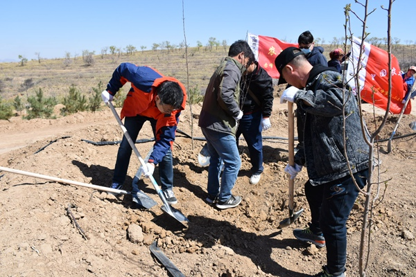

2021年是全民义务植树运动第40周年。2021年4月18日上午，农工党赤峰市委会组织30余名党员来到位于文钟镇三道井子村东梁的义务植树基地，以实际行动为建设生态安全屏障增绿添彩。
此次此次植树活动，旨在落实习近平总书记“建设我国北方重要的生态安全屏障”、“在祖国北疆构筑万里绿色长城”等重要指示精神。
在植树点现场，党员们带着满腔的热情开始劳动，分工、植苗、整地、培土，现场气氛非常热烈。大家手持铁锹，干劲十足，将一棵棵充满生机和希望的树苗植入土地，播撒绿色和春天的梦想。
通过此次活动，党员们深刻地体会到了“绿化家园，从我做起”的内涵，以实际行动践行了“绿水青山就是金山银山”的绿色发展理念，为倡导人人爱绿植绿护绿的文明风尚、促进赤峰经济社会发展全面绿色转型贡献了农工党党员力量。